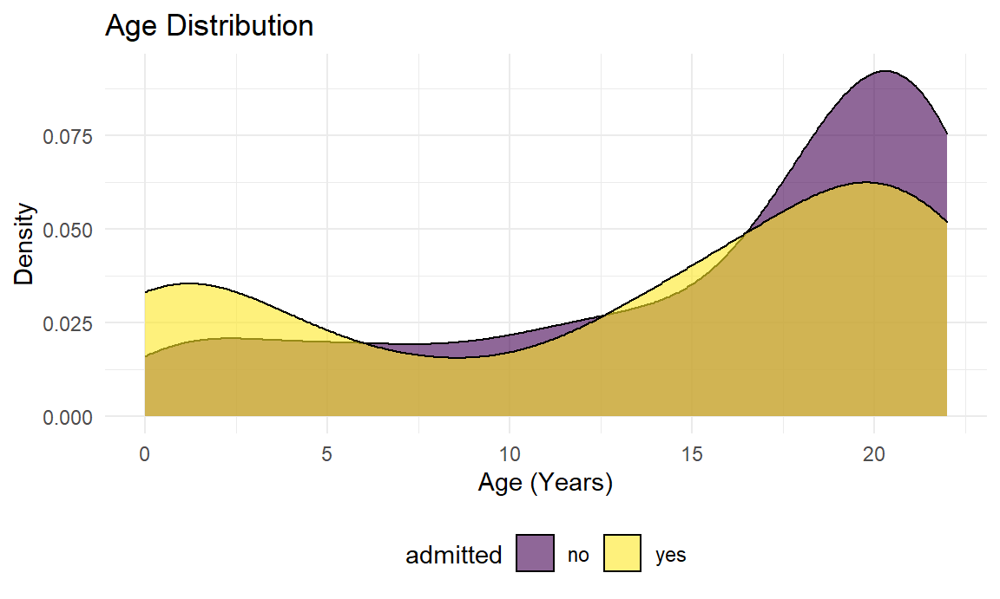

library(tidyverse)
knitr::opts_chunk$set(
fig.width = 6,
fig.asp = .6,
out.width = "90%")
theme_set(theme_minimal() + theme(legend.position = "bottom"))
options(
ggplot2.continuous.colour = "viridis",
ggplot2.continuous.fill = "viridis")
scale_colour_discrete = scale_color_viridis_d
scale_fill_discrete = scale_fill_viridis_d
knitr::opts_chunk$set(comment = NA, message = FALSE, warning = FALSE, echo = TRUE)There has been a lot of research done concerning COVID-19 in the past year, but not much focus, relatively speaking, is given to how COVID-19 affects children and young adults given the low fatality rate of those age groups. Our goal in this project is to look at the severity of COVID-19 in young people and how various common comorbidities can affect the risk of having a more sever case of COVID-19.
Jerry’s - While COVID seems to affect adults more than children, some pediatric patients do become ill and even require hospitalization. Most studies have described clinical characteristics of children already admitted to hospital and their course during admission - but more can be learned about risk factors associated with the need hospitalization prior to admission.
We would like to leverage the skills learned in p8105 and the data visualization capabilities in R to explore clinical question mentioned below.
ped_covid =
read_csv("./data/p8105_final_ped_covid.csv")
ped_covid %>%
head()# A tibble: 6 x 30
id admitted age date_of_birth ethnicity gender censusblock
<dbl> <chr> <dbl> <chr> <chr> <chr> <dbl>
1 1 no 17 8/10/2003 0:… E2 Not S… M 3.60e14
2 2 no 22 5/26/1998 0:… E2 Not S… M 3.60e14
3 3 yes 22 8/12/1997 0:… E1 Spani… M 3.61e14
4 4 no 19 5/17/2000 0:… E1 Spani… M 3.60e14
5 5 no 20 1/17/2000 0:… E1 Spani… F 3.60e14
6 6 yes 21 12/18/1998 0… E1 Spani… M NA
# … with 23 more variables: censusblockgroup <dbl>, censustract <dbl>,
# city <chr>, race <chr>, ses <dbl>, state <chr>, zip_code_set <dbl>,
# eventdatetime <chr>,
# outcomeadmission_admission_1inpatient_admit_service <chr>,
# bmi_yes_or_no <dbl>, bmi_event_date_time <chr>, bmi_value <dbl>,
# asthma_date_time <chr>, asthma_dx <chr>, diabetes_date_time <chr>,
# diabetes_dx <chr>, icu_yes_no <dbl>, icu_date_time <chr>,
# systolic_bp_event_date_time <chr>, systolic_bp_value <dbl>,
# ed_yes_no_0_365_before <dbl>, admission_primary_dx <chr>,
# admission_apr_drg <chr>Source 1: (Initial data gathering by Jerry Chao) This is a de-identified dataset of pediatric patients from a tertiary care medical center who tested positive for COVID-19 on SARS-CoV-2 RT PCR test and infrormation on whether or not they were hospitalized. The age range in the study is 0 to 22 years of age. An id number for each patient has been randomly generated. There are 375 rows (patients) and 30 columns in this dataset. The variables included in this dataset are id, admitted, age, date_of_birth, ethnicity, gender, censusblock, censusblockgroup, censustract, city, race, ses, state, zip_code_set, eventdatetime, outcomeadmission_admission_1inpatient_admit_service, bmi_yes_or_no, bmi_event_date_time, bmi_value, asthma_date_time, asthma_dx, diabetes_date_time, diabetes_dx, icu_yes_no, icu_date_time, systolic_bp_event_date_time, systolic_bp_value, ed_yes_no_0_365_before, admission_primary_dx, admission_apr_drg. Some of the important variables are date and time of positive covid test (“eventdatetime”), whether the patient was admitted (“admitted”), whether there was a preceding emergency department visit (“ed_yes_no_0_365_before”), whether the patient needed intensive care admission (“icu_yes_no”) and date and time of icu admission (“icu_date_time”), demographic data (age, gender, ethnicity, race, zip code data - predominantly in the Bronx), some past medical history data (bmi data, asthma data, diabetes data) and one vital sign datum (systolic blood pressure).
Source 3: NYC OpenData
Analyses: We plan to perform univariate analyses describing demographic and past medical history by admission status (yes/no). We will also perform multivariate logistic regression modeling to assess the association of demographic factors and past medical history with the need for hospital admission in infants, children, and teens. In particular, we will assess increasing age, SES, past medical history (in particular asthma, obesity - defined as body mass index > 95% by age & gender, and diabetes) as hypothesized risk factors of interest.
Visualizations: We are planning to make various plots (e.g., scatterplot, boxplot, barplot, lineplots) with interactivity using plot_ly to provide a platform for online data analytics and visualizations where users can observe information by zooming and hovering. Also, we plan to integrate different plots into dashboard using shinydashboard which will facilitate users’ understanding in an easy-to-read format. The density plot below showing the distribution of age by admission status is one of the visualization examples. We have generated a density plot of the age in this dataset by admission (yes/no). There appears to be a bimodal age distribution of pediatric patients who tested positive for COVID-19 with more admissions during the first 2.5 years of life and also among older teenagers (15-20 years). There are less patients admitted in the toddler and small child age range (3-10).
ped_covid %>%
ggplot(aes(x = age, fill = admitted)) +
geom_density(alpha = .6) +
labs(
title = "Age Distribution",
x = "Age (Years)",
y = "Density") +
viridis::scale_color_viridis(discrete = TRUE) +
theme_minimal() +
theme(legend.position = "bottom")
shinydashboard, integrating all the necessary codes for visualization can be a challenge.We plan to meet once or twice a week to discuss project progress. The tentative timeline is outlined below:
shinydashboard and create website.wordcountaddin::text_stats("proposal.Rmd")| Method | koRpus | stringi |
|---|---|---|
| Word count | 495 | 496 |
| Character count | 3300 | 3300 |
| Sentence count | 33 | Not available |
| Reading time | 2.5 minutes | 2.5 minutes |